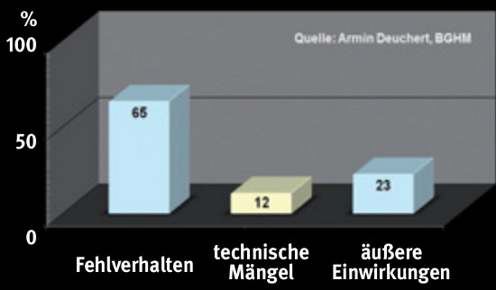
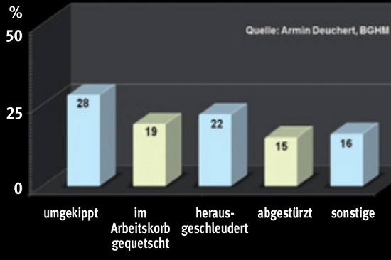

An hochgelegenen Arbeitsplätzen ereignen sich mehr Unfälle bei der Benutzung von Leitern als bei der Benutzung von Hubarbeitsbühnen.
Nicht zuletzt ist dies auf den hohen Sicherheitsstandard der Hubarbeitsbühnen zurückzuführen.
In den vergangenen 20 Jahren wurden von den staatlichen Arbeitsschutzbehörden durchschnittlich fünf Arbeitsunfälle pro Jahr gemeldet, bei denen Bediener von Hubarbeitsbühnen ums Leben gekommen sind.
Die Sicherheit beim Umgang mit Hubarbeitsbühnen ist wesentlich vom Verhalten des Bedieners abhängig. Das zeigen die nachfolgenden Unfallanalysen der Berufsgenossenschaft Holz und Metall(BGHM).
Die Unfallursachen (Bild 1-1) sind:
Das Fehlverhalten von Hubarbeitsbühnen-Bedienern steht damit an erster Stelle der Unfallursachen.

Die Unfallarten lassen sich wiederum unterteilen in Fälle (Bild 1-2), bei denen
Um das Unfallrisiko trotz des zunehmenden Einsatzes von Hubarbeitsbühnen zu minimieren, müssen sich alle am Prozess beteiligten Personen in hohem Maße verantwortlich zeigen. Bereits die Auswahl einer geeigneten Hubarbeitsbühne ist eine wichtige Voraussetzung, um die Sicherheit zu gewährleisten.
Nicht zuletzt muss der Bediener hinsichtlich möglicher Gefahren intensiv geschult werden.
